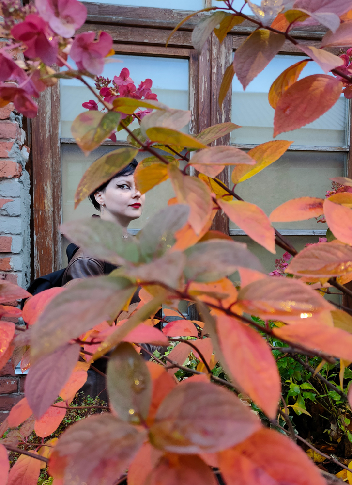

        <div class="container mx-auto mt-5">
            <div class="row">
                <div class="col-md-8">
                    
                </div>
                <div class="col-md-4">
                    <h3>About me</h3>
                    <p>Долгие истории никому не интересны. Короткая история такова: меня зовут Мария, и я люблю собирать впечатления. Мои фото - это мои закладки-напоминания о местах, вещах, людях такими, какими я их вижу в моменте.</p>
                    <br>
                    <p>Я закончила Московский художественно-промышленный институт, но долгое время имела к творчеству очень мало отношения. Но всё же фотография оставалась со мной всегда: как спсоб сохранить и передать другим красоту мгновения.</p>
                    <br>
                    <p>С верными Canon 400d и Huawei P50pro я ищу интересное в повседневном - и дарю вам.</p>
                </div>
            
            </div>
            
        </div>
